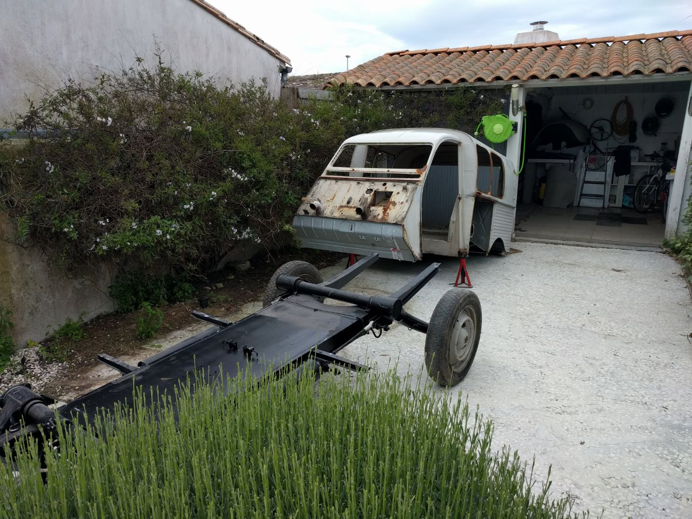
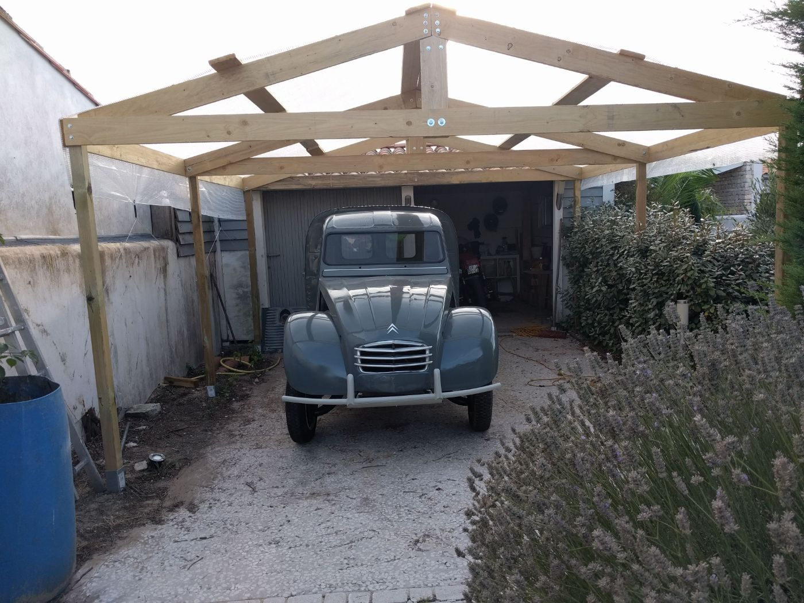
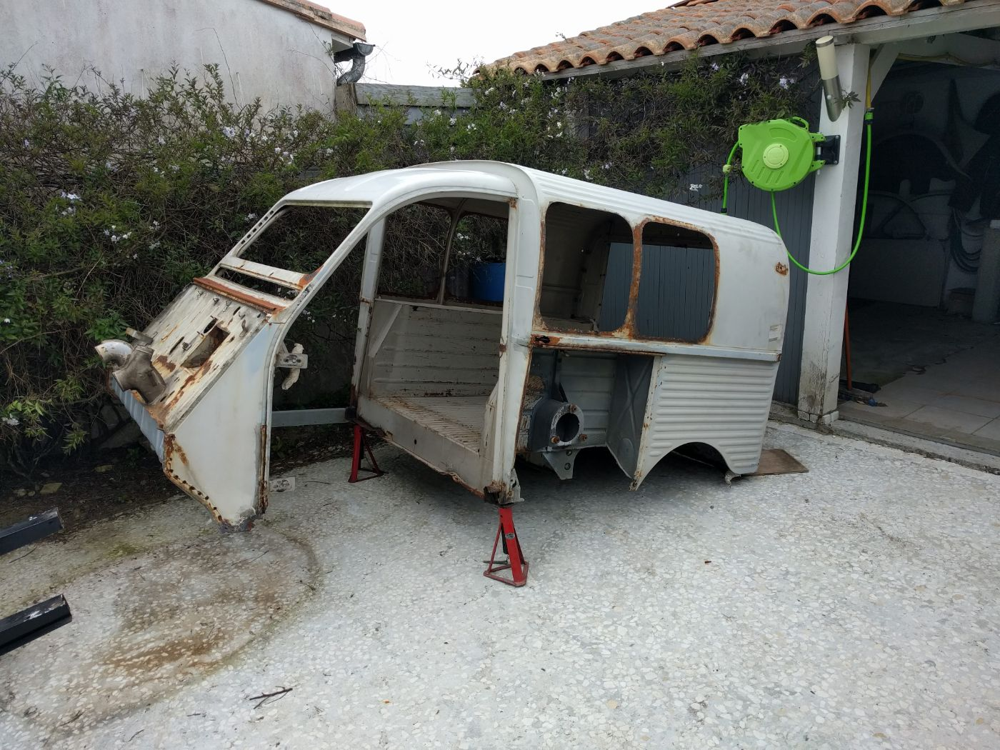
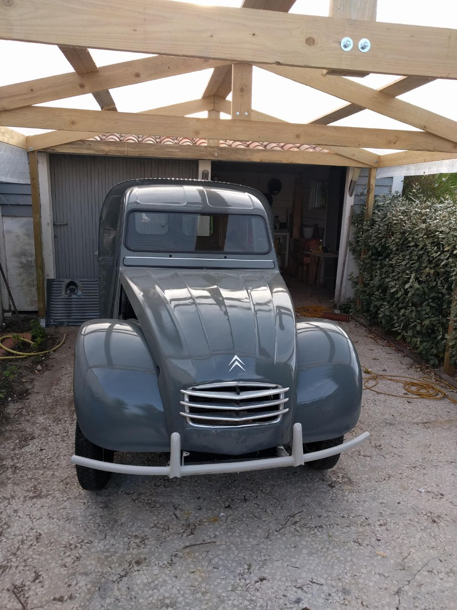
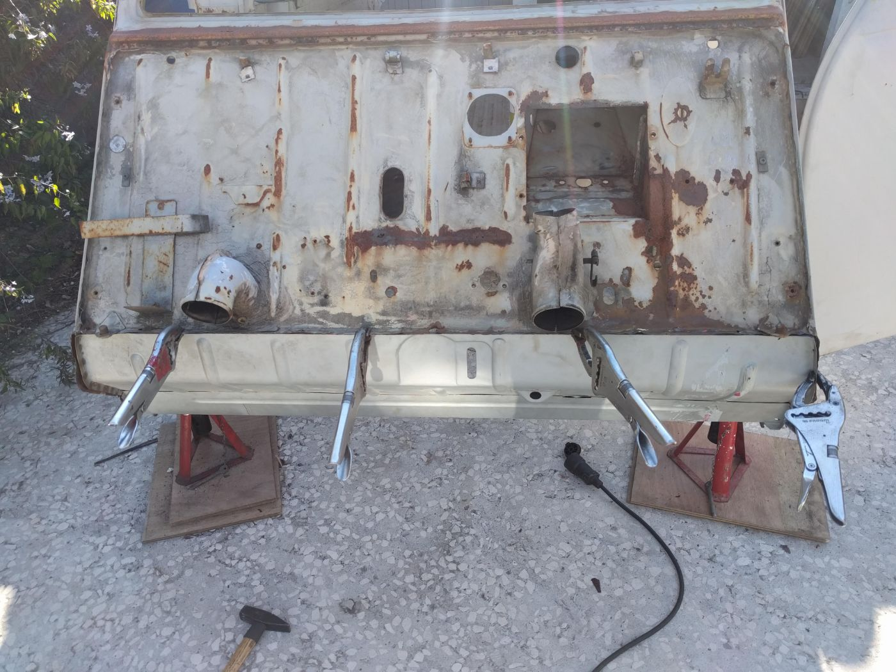
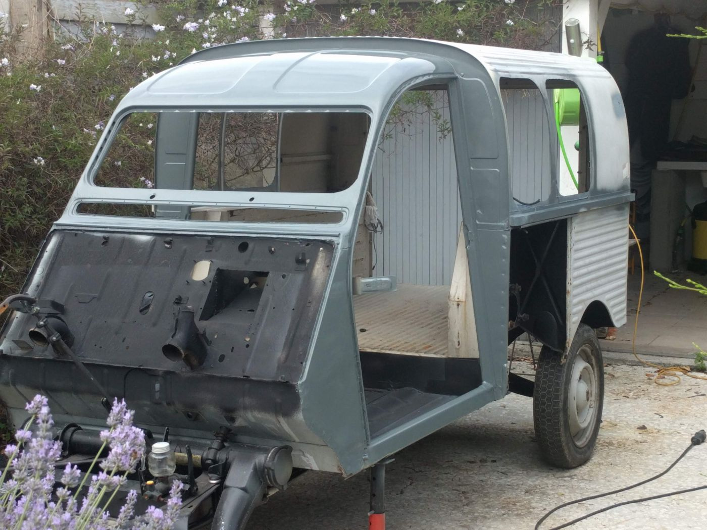
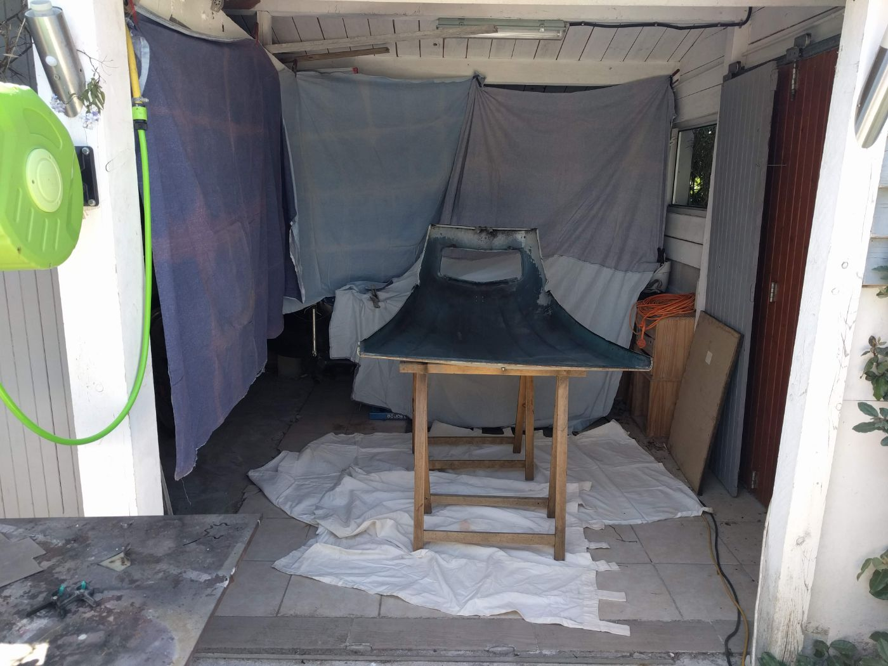
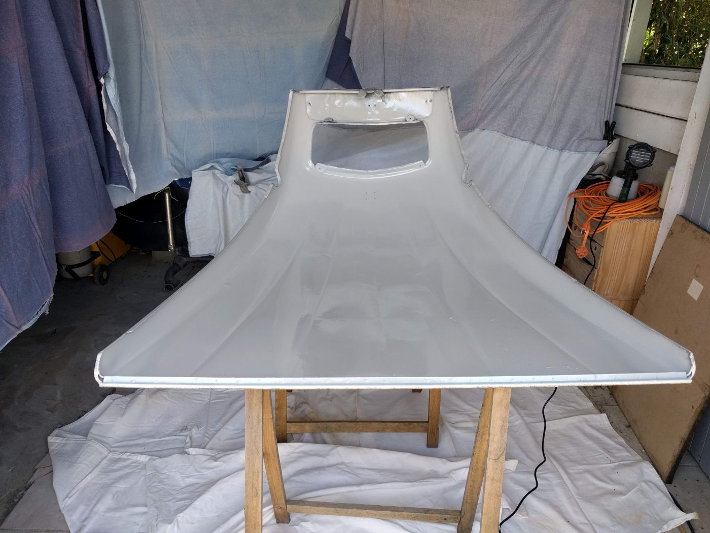
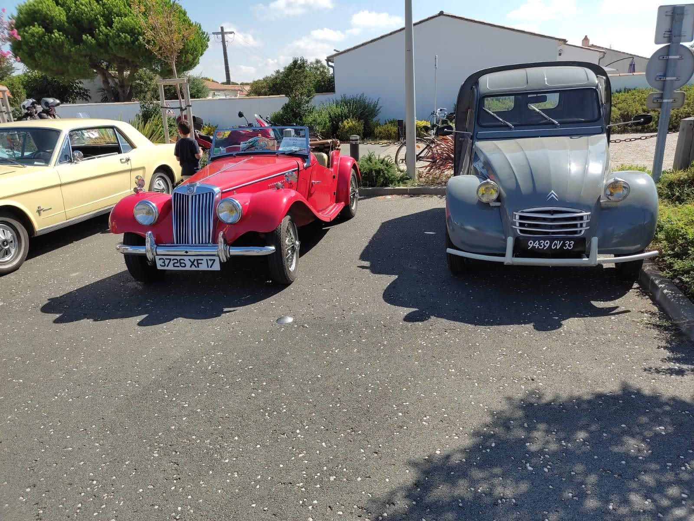
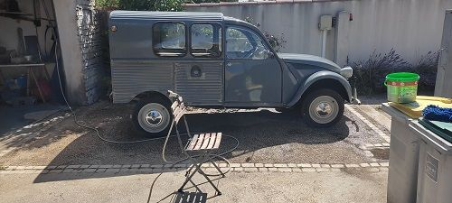

En deux mots
Une 2CV fourgonnette AZU de décembre 1971 (moteur 425 cm³). Alain l'a achetée démontée en mai 2020, avec un châssis déjà rénové. Il l'a ensuite restaurée lui-même : tôlerie, caisse, peinture, remontage. Elle n'a ensuite été sortie qu'en de rares occasions : rassemblement Auto Ré (2021), tournage de la série TF1 « Je te promets » (saison 3, été 2022), expo 2CV/Méhari de Sainte-Marie (2024). Elle n'a jamais servi au quotidien.
Aujourd'hui elle est complète et le moteur tourne (vidéo ci-dessous). En revanche, elle n'a pas été sortie depuis 2024 : une remise en route est à prévoir, ainsi que quelques finitions. Elle n'a pas de contrôle technique. Elle est à vendre en l'état, idéalement à un passionné qui saura la terminer.
Fiche technique
| Marque / modèle | Citroën 2CV fourgonnette, type AZU A (AZUA sur la carte grise) |
| 1ʳᵉ mise en circulation | 31/12/1971. Elle a plus de 30 ans, donc elle peut passer en carte grise collection |
| Genre / carrosserie | CTTE (camionnette), fourgon tôlé |
| Moteur | Bicylindre à plat refroidi par air, 425 cm³, essence |
| Puissance fiscale | 2 CV |
| Places | 2 |
| Poids à vide / PTAC | 530 kg / 880 kg |
| N° de série | 7159442 |
| Immatriculation | 9439 CV 33 (ancien format, Gironde) |
| Kilométrage | 70 244 km au compteur, non garanti |
| Couleur | Gris (repeinte en 2020) |
| Contrôle technique | Aucun en cours (à faire après remise en route) |
| Documentation | Revue Technique Automobile 2CV d'époque (tourisme et utilitaire) fournie |
| Visible à | Le Bois-Plage-en-Ré (17), sous abri |
Histoire et restauration
- Avant 2020 · En Gironde, son précédent propriétaire commence une rénovation (châssis entièrement refait, lot de pièces neuves) puis abandonne pour raisons familiales.
- Mai 2020 · Alain la rachète, complète mais démontée, et la ramène au Bois-Plage.
- Mai – juin 2020 · Caisse déposée et mise sur rôtissoire. Reprises de tôlerie et soudures au poste MIG sur l'arrière, les bas de caisse, les montants et le plancher de la caisse. Moteur 425 cm³ déposé (Alain recherchait un palier avant de vilebrequin).
- Juin – juillet 2020 · Apprêt, puis peinture grise de la caisse, du capot, des ailes et des portes en cabine de peinture. Remontage de la caisse sur le châssis.
- Août 2020 · Elle est de nouveau sur ses roues, calandre et pare-chocs en place.
- 2021 · Fin de rénovation : électricité, galerie 2CV achetée. Premier rassemblement : Auto Ré, Sainte-Marie, 29 août 2021.
- Juillet – août 2022 · Louée par Authentic Prod pour le tournage de « Je te promets » saison 3 (TF1) : Cabariot, Rochefort, Saint-Jean-d'Angély, Surgères, Puyrolland.
- Novembre 2023 · Problème mécanique : le collecteur admission/échappement et le carburateur sont à remplacer. Alain achète un carburateur Solex 26 IBC en mars 2024.
- 29 juin 2024 · Exposée au rassemblement 2CV/Méhari Île de Ré, à Sainte-Marie.
- 2026 · Le moteur tourne (vidéo). Elle n'a pas été sortie depuis 2024, et l'aile avant droite et le pare-chocs avant sont démontés.
🎥 Le moteur tourne
Avant / après










Toutes les photos de la restauration
Clique sur une photo pour l'agrandir et la télécharger. Ce sont des photos d'Alain prises pendant le chantier, de mai à août 2020.
État actuel et ce qu'il reste à faire
Ce qui est fait
- Châssis rénové (par le propriétaire précédent)
- Tôlerie, soudures, caisse sur rôtissoire, apprêt et peinture complète
- Remontage complet. Sorties occasionnelles seulement, de 2021 à 2024 (rassemblements, tournage TF1)
- Le moteur tourne
Ce qu'il reste à faire
- Remise en route : carburation (collecteur et carburateur à vérifier, un Solex 26 IBC a été acheté), freins, liquides, état des pneus
- Remonter l'aile avant droite et le pare-chocs avant (présents, démontés)
- Finitions : rouille de surface sur les pare-chocs et les bas de caisse, plaque avant
- Contrôle technique, puis carte grise au nom de l'acheteur (collection possible)
Elle a dormi sous abri depuis 2024. On ne sait pas encore si elle roule : à vérifier sur place.
📬 Contact
Véhicule visible au Bois-Plage-en-Ré (17), sous abri, sur rendez-vous. Démarrage du moteur possible devant vous.
Pour toute question ou pour organiser une visite, merci de passer par la messagerie de l'annonce Leboncoin.
Vente en l'état, par la succession. Dossier fourni : carte grise ancien format barrée de la précédente propriétaire, certificat de cession, attestation notariale, Revue Technique, une trentaine de photos de la restauration.